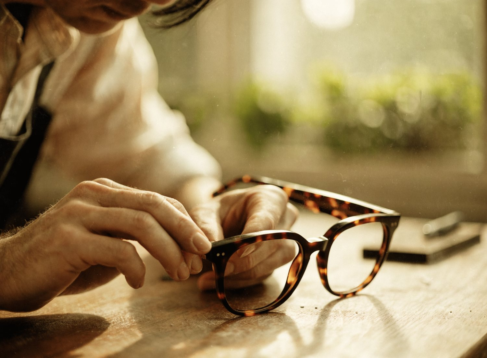
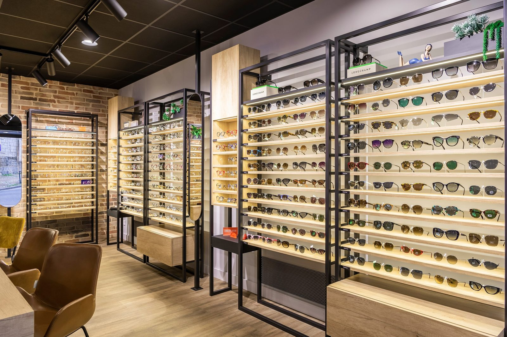
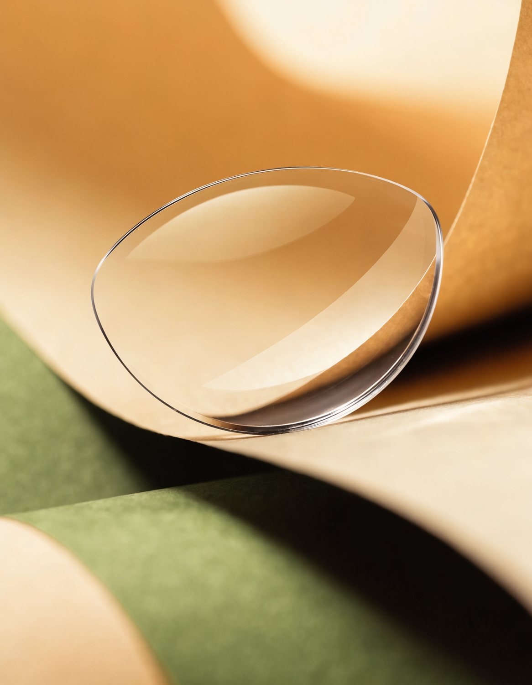

Bien plus que des lunettes : un accompagnement complet pour chaque regard, à chaque âge de la vie — du sur-mesure artisanal aux aides visuelles spécialisées.
Conçues de A à Z dans notre atelier de Nogent-le-Rotrou.
Notre machine numérique Opti3 et le logiciel Logic Side Carve permettent de pré-visualiser votre monture sur votre visage avant même qu'elle soit fabriquée.
Choix du style, de la forme, des couleurs. Prise de mesures précise (visage, nez, longueur des branches). Maquette, puis fabrication de votre paire unique, faite main dans des plaques d'acétate du Jura.
Modèles maison : Véronique, Maryse, Francesca, Bruno, Hugues, Mini ronde, Delphine, Citronnelle, Snake, Gulf…


L'équipement optique d'un enfant ne s'improvise pas. De la naissance à 10 ans, la vision est en plein développement — une erreur de correction peut avoir des conséquences durables.
La lumière bleue (380–500 nm) mérite une attention particulière chez les jeunes yeux. Montures adaptées à la morphologie, confort optimisé, suivi régulier : notre équipe est formée pour accompagner chaque étape.
Parce que chaque regard en herbe compte autant que celui d'un adulte.
Équipe spécialement formée à l'optique pédiatrique et aux besoins visuels de 0 à 10 ans.
Suivi post-équipement, ajustements gratuits, garantie sérénité à chaque visite.
Large sélection de montures adaptées aux petites morphologies, colorées et solides.
Étroite collaboration avec les ophtalmologistes de la région pour un suivi cohérent.
Chaque paire est ajustée avec soin : longueur des branches, largeur du pont, cambrure.
Conseils clairs sur la lumière bleue, le temps d'écran et le suivi visuel régulier.
La basse vision, c'est une perte partielle de la vue qui ne peut pas être entièrement corrigée par des lunettes classiques. Elle touche notamment les personnes atteintes de DMLA ou d'autres pathologies rétiniennes.
Notre équipe, spécialement formée, réalise des tests en magasin — sur rendez-vous téléphonique — dans des conditions réelles d'utilisation. Nous vous accompagnons et assurons un suivi personnalisé.
La basse vision commence à un dixième. Nous sommes là pour aller plus loin.
réseau Un Dixième+Des lunettes à assistance auditive invisible intégrée à la monture, conçues pour une gêne légère à modérée. Parfaites pour les lieux bruyants, les réunions, regarder la télé ou simplement converser en famille.
Un design élégant qui ne trahit rien. La technologie disparaît dans le style — et le son revient naturellement.
Compatible avec les verres Transitions® — un seul équipement, double bénéfice.
Test en magasin — venez essayer sans engagement, notre équipe est à votre écoute (littéralement).
Gêne légère à modérée : la solution discrète avant l'appareillage classique.
La technologie japonaise, fabriquée en France.
Pigeard propose exclusivement des verres Nikon, fabriqués en France à Provins (77). Précision, finesse, légèreté : la techno japonaise au service de chaque correction.
Made in France — Certifiés AFNOR, fabriqués à Provins (Seine-et-Marne). Pas un verre importé.
Verres pour daltoniens — Test EnChroma en magasin : découvrez (ou redécouvrez) les couleurs.
Progressifs — De 149 € à 600 € selon la technologie. 100% Santé inclus dans nos offres.
Transitions® — Verres photochromiques qui s'adaptent à la lumière, en option sur toutes nos montures.
Antireflet garanti — Jusqu'à 3 ans. Remplacement sans surprise.

De l'examen de vue à l'ajustage à vie : voici comment nous prenons soin de votre regard.
Chez Pigeard, une consultation n'est pas une simple vente. C'est un vrai parcours opticien, pensé pour vous accompagner de A à Z — avec la même rigueur depuis 1863.
Chaque étape a son importance. Pas de raccourci, pas d'improvisation. Votre vision mérite le même soin que celui que nous apportons à nos montures sur mesure.
L'adaptation à de nouveaux verres peut prendre quelques jours. Notre équipe assure un suivi téléphonique et vous accueille gratuitement pour tout ajustement dans les 60 jours suivant l'équipement.
Bilan visuel complet avec nos opticiens diplômés. Mesure précise de votre correction, contrôle de la vision binoculaire et conseil sur les verres adaptés à votre mode de vie.
Écart pupillaire, hauteur de montage, longueur des branches, profil du nez : chaque millimètre compte pour un verre bien centré et un port confortable.
Votre visage, votre style, votre budget. Nous vous guidons parmi nos marques — en privilégiant toujours le français — et visualisons la monture sur votre visage avant commande.
Vos verres Nikon sont taillés à Provins (77), Made in France, certifiés AFNOR. Précision japonaise, fabrication française. Délai habituel : 5 à 10 jours.
Lors de la remise, nous ajustons la monture à votre visage avec minutie. Et après ? Réglages, entretien, réparations : tout est gratuit, à vie, dans nos trois magasins.

Trois magasins, une même famille, un seul engagement : prendre soin de chaque regard comme s'il était unique. Parce qu'il l'est.